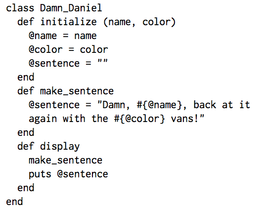

Before understanding Ruby Classes, it is important to understand what it means when you hear that Ruby is an object-oriented language. This means that Ruby manipulates constructs called objects (an object is anything in Ruby that you can perform a method on, like a string, integer or float). Classes, then in the most simple sense, are templates from which object instances (an individual variation of an object) are created. A class is made up of a collection of variables representing internal state and methods providing behaviors that operate on a state. (from wikibooks.org)
The following is a very helpful description of classes from Rubylearning.com: "Classes in Ruby are first-class objects - each is an instance of class Class. When a new class is defined (typically using class Name ... end), an object of type Class is created and assigned to a constant (Name. in this case). When Name.new is called to create a new object, the new class method in Class is run by default, which in turn invokes allocate to allocate memory for the object, before finally calling the new object's initialize method. The constructing and initializing phases of an object are separate and both can be over-ridden. The construction is done via the new class method, the initialization is done via the initialize instance method. initialize is not a constructor!"
The picture below is an example of a class, which I will go through and explain:
Here, the class Damn_Daniel is created beginning with "class #Classname" (class must be lowercase followed by an uppercase name). It is then initialized with the "def initialize" method. This method takes two arguments, name and color, and assigns them to instance variables, @name and @ color. This is to make the @name and @color variables available to later methods within the class. Local variables are only available within a method, and cannot be referenced outside of it. I also created the @sentence variable, which I assigned to a "" as a placeholder, but which I will later reassign in the def make_sentence variable.
The make_sentence method assigns the @sentence instance variable to a string that includes the @name and @color instance variables (these will correspond what arguments were entered into the method). When using instance variables within a string, you must use the #{@instancevarname} syntax.
The third method, display, prints to the screen the @sentence instance variable. The key to having the actual "Damn, @name..." sentence be printed, instead of the placeholder "", is calling the make_sentence method inside of display, as I have done. This brings in the updated @sentence instance variable. If I had used a local variable instead of an instance variable for @sentence, this would not have been possible. I have broken up this class into 3 methods because each one does something different, and that is god practice for making classes easy to read.